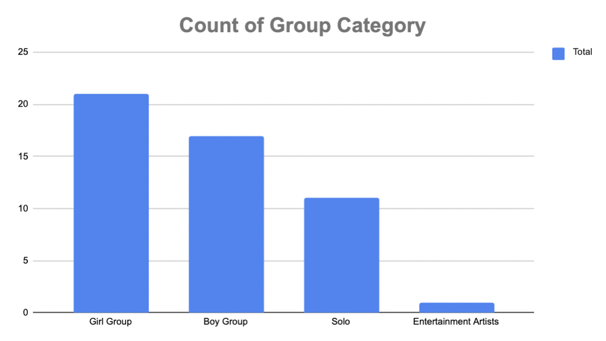
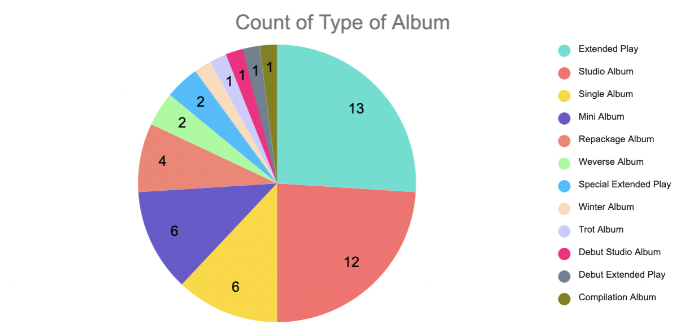
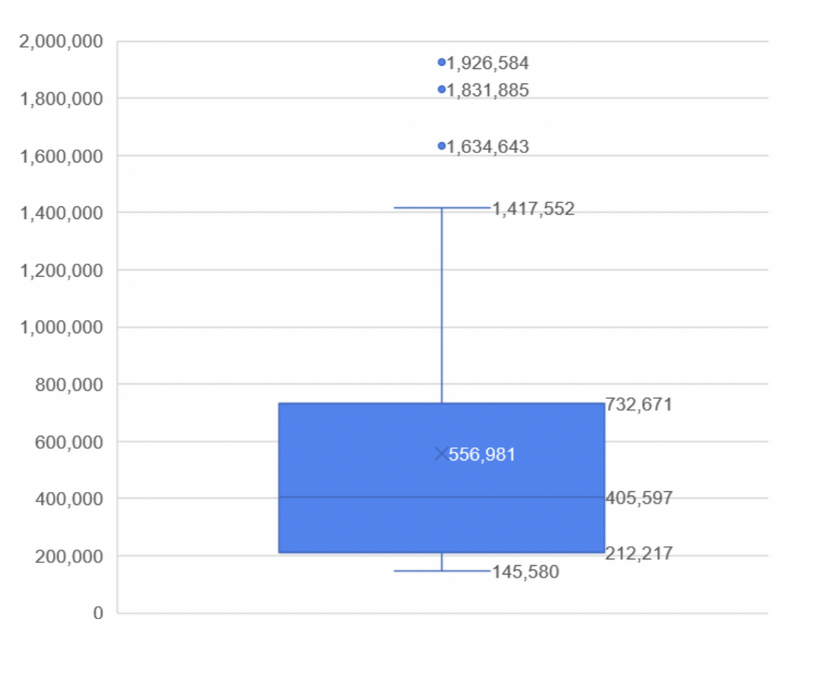
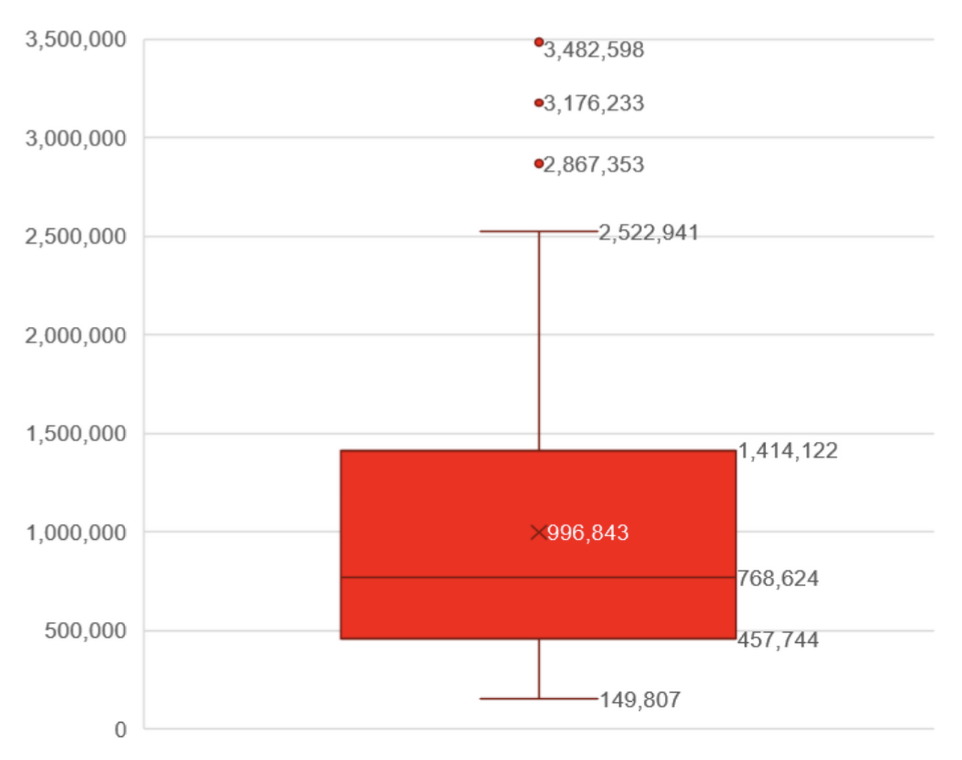

Introduction
In the growing world of pop music, the K-pop genre stands out the best and captures the heart of the people.
Its fun, interactive, and enticing rhythm unites people and is even the way to find new friendship
s regardless of their origin or gender. Not only it unites people but it also inspires
the youth to cultivate their potential and talent with music. K-pop helped me with expressing myself.
I used to like to dance before but it changed when the pandemic started. Before the pandemic,
K-pop played a big role in my dancing journey. I was able to express what I truly wanted or liked to do without
worrying about the thoughts of other people. Even though my passion for dancing is not present anymore, K-pop still plays an
important role in my life as it helps me feel myself and is my buddy during pastimes.
As we dig deeper into our research, I highly recommend you to pick and play any music besides this text. The Album is from Newjeans
and they are very popular among the 4th Generation groups in K-pop.
Disccusion
Our study or research is all about finding which among the different
group categories sells the most albums. With the data of albums sold that we collected,
we were able to answer the question above and make a conclusion out of it.
Our data set is a sample of the top 50 best-selling K-pop albums in 2022.
We only picked the top 50 because the number of albums in our source is only limited to 50.
We used the data from the Circle Chart. Circle Chart tabulates the relatively weekly, monthly, and yearly popularity
of songs and albums in South Korea. Since the number of albums in our source is limited, we really can’t
say the actual number of the entire population of K-pop albums released that year. Our data set contains six (6)
different columns that indicate the Album Title, Artist, Group Category, Type of Album, Retail Album Sales,
and Album sales in the K-pop industry. Take note that there is no unit of measurement.
The individual/s in our data set are the albums. We have two variables
for each qualitative and quantitative data. The qualitative variables include
the artist, group category, and types of albums released. Lastly, our
quantitative variables are the number of retail albums and albums sold.
Retail album sales include the total sales of offline albums at retail stores.
Album sales, on the other hand, counts shipments and returns.
Take note that i only picked few graphs because their content already answers our question!
To see more about our graphs and datas, please click the link below
CLICK HERE
Qualitative Data

The bar graphs show that Girl Groups appeared in the data set 21 times compared to other categories.
With this information, we can say that people are buying more albums that were released by the Girl Groups in the year 2022.

The pie chart shows that Extended Play albums sold the most in the top 50 list. It is above the studio album by only one point difference.
With this information, both the Extended Play and Studio types of albums are the
best-selling types of albums in the year 2022.
Quantitative Data

The graph shown beside this text is a 5-number summary (in a box plot form) of the Retail Albums sold that consists of 5 values.
The line on the bottom represents the minimum amount of retail albums sold (Q1),
which is 145,180, while the line on the top represents the maximum number of retail albums sold (Q3),
which is 1,417,552. There are also 3 outliers in the graph (points above the maximum ammount or number).
Outliers are single data points that are far outside of the average value (556,981.28).
Since the median falls on the lower center of the box, the distribution is positively skewed.
Since the line on the top is longer than the bottom, the distribution as well is positively skewed.

The 5-number summary (in box plot form) of the Album sales is pretty similar to the previous one above.
The line on the bottom represents the minimum amount of albums sold (Q1), which is 149,807, while the line on the
top represents the maximum number of retail albums sold (Q3), which is 2,522,941. Notice the gap between the amount of sales counted between retail albums and albums? Since Album sales
count shipments and returns as one album sold, it will always be greater than the amount of Retail Albums sold. There are also 3 outliers in this particular graph. Outliers are single data points that are far outside of the average (996,842.78).
Since the median falls on the lower center of the box, the distribution is positively skewed.
Also, since the line on the top is longer than the bottom, the distribution is positively skewed as well.